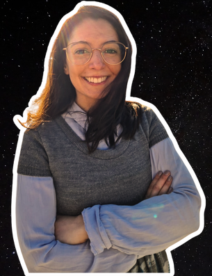

Formei-me em Biologia no ISA, e tirei o mestrado em Microbiologia no IST. Tirei um PhD pelo MIT Portugal em Bioengenharia. Ganhei várias bolsas conceituadas que me levaram a fazer o postdoc nos EUA, no departamento de Astronomia de Cornell, e agora como investigadora independente no mesmo sítio. Fora de horas, gosto de desenhar missões e experiências espaciais. Sou co-fundadora do @astrocup, um projecto para estudar dispositivos menstruais para astronautas. Nos últimos segundos disponíveis do dia, tento a minha sorte com comunicação de ciência, no podcast @nauespacialpod e no meu IG @astrobioligia!
Para ti, o que é a astrobiologia?
É uma ciência motivada por perguntas em vez de disciplinas, sendo por isso multidisciplinar. Pessoalmente foco-me na pergunta: há vida noutros planetas?
Que diferenças sentes entre ser investigadora na Europa e nos Estados Unidos?
A cultura de trabalho é muito diferente. Na Europa há mais feriados e férias, nos EUA há menos hierarquia. Os estudantes são tratados como cientistas com expertise e os professores pelo primeiro nome. Isto faz com que na sala as ideias sejam discutidas mais abertamente.
Como é a experiência de ir ao campo (ex. ao Ártico) recolher amostras?
É fantástica, mas é trabalho muito duro. No verão é até mais duro que no inverno, por mais incrível que pareça. É, no entanto, um enorme privilégio.
Que conselho dás aos futuros astrobiólogos portugueses?
Sim, podes mudar para astrobiologia vindo de qualquer curso. Até cursos não científicos como Direito e etc. Foca-te em aprender a skill que mais te interessa e domina-a bem. Haverá certamente necessidade dessa skill aplicado ao espaço.
Lutar com 1 barata do tamanho de 1 labrador ou 100 labradores do tamanho de 1 barata?
100 labradores do tamanho de uma barata e se achares o contrário tenho muito respeito por ti mas estás errado.